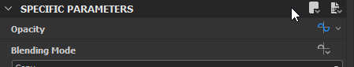

Switch to Preview mode for the Input parameters
Parameter presets
Parameter Presets give the user the ability to store and transfer large amounts of pre-configured values for a set of parameters.They can help in many scenarios, and are most useful when a large amount of parameters with a large range of possibilities is present.
There are two ways for storing and loading presets, both have different use-cases, detailed below.

External presets
External Presets involve an external file on disk, an *.SBSPRS file. They can be transferred between different graphs and nodes, but only within the application. Their main purpose is exactly this: transferring a number of values too large to copy one-by-one.
External Presets are available for all Specific Parameters On Graph Instances, for most Specific Parameters on Atomic nodes (exceptions are those parameters that can not be exposed), and for the exposed Input Parameters in a Graph's Properties.
They are simply saved and loaded through this menu. The Saved SBSPRS files can be loaded on any other node or graph.
Note
Even partial matches will work: parameters stored in an SBSPRS that do not exist on the loaded node, will simply be ignored. This means you can transfer properties between nodes that are mostly similar, such as the color and grayscale version of Tile Sampler! All shared parameters will load. Matching happens on identifier and type.

Embedded presets
Embedded Presets work differently from External Presets. Their main advantage is that they are contained within the SBS or SBSAR file, so that they can easily be transferred and loaded in Substance Painter, Maya and 3DS Max (currently not available in Substance 3D Sampler, UE4 and Unity). The user does not have to mess around with SBSPRS files either.
They serve a different purpose: it's not possible to transfer them between Nodes and Graphs (you would have to use External Presets for that). They can also only be created on the Input Parameters of a Graph's Properties, and only when within Preview Mode.
The workflow is as follows:
-
-
Set values to desired result
-
Click the + next to the presets dropdown to create a new embedded preset, the preset is then immediately created and stored
Embedded presets can not be modified afterwards, though they can be renamed. Modifying as well as removing them happens by clicking the gear icon next to the dropdown and the + icon. Press the minus sign next to a preset to remove it.
Nothing more needs to be done to enable presets: once published as SBSAR, your presets will be available in Substance Painter after import.
Caution
The Presets tab is disabled when using in-context editing.